01 / 06
Vice City
Praias lotadas, prédios art déco e neon. A cidade grande de Leonida, inspirada em Miami.
Ver no mapa: Vice CityDois fugitivos e um estado inteiro para explorar.
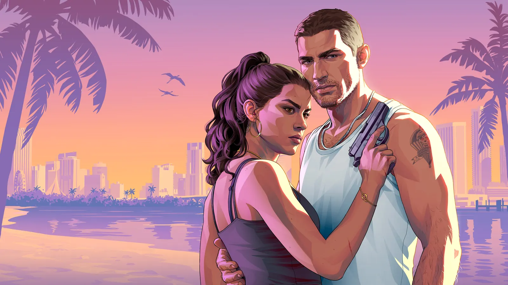
Já disponível
Veículos, personagens, as seis regiões e um checklist para acompanhar seu progresso em GTA VI. Tudo com fonte.
Arte: © Rockstar Games
Status do lançamento
Desde 19 de novembro de 2026 no PlayStation 5 e no Xbox Series X|S, no mundo inteiro.
6 dias desde o lançamento

Protagonista
Saiu da prisão decidida a virar a própria sorte. Em Vice City, isso nunca sai barato.
Ver a ficha da Lucia

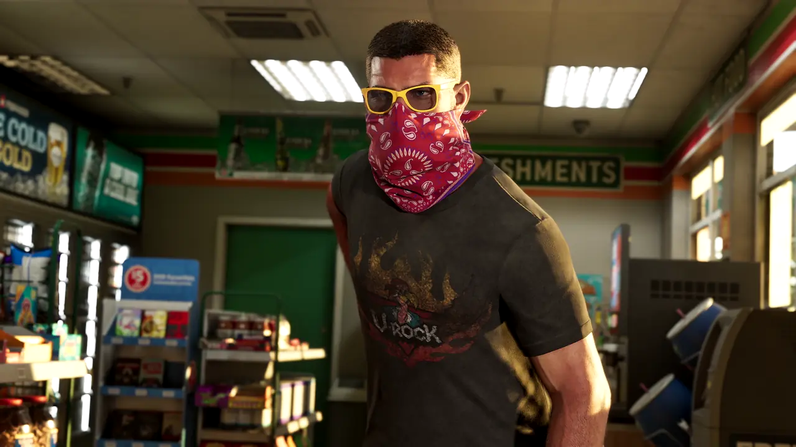
Protagonista
Cresceu entre golpistas, passou pelo Exército e hoje faz serviços para contrabandistas nas Keys.
Ver a ficha do Jason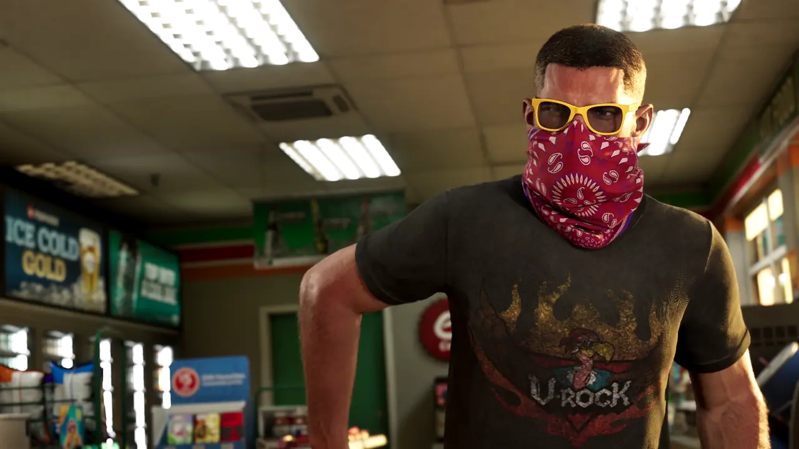
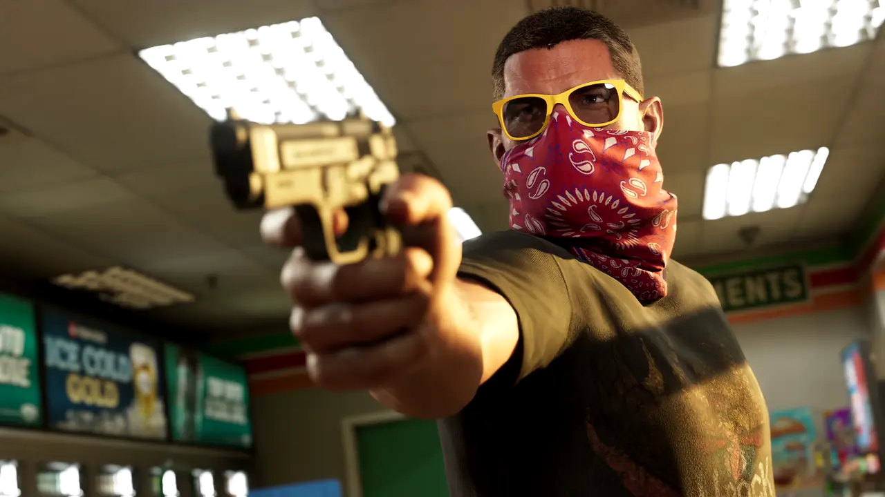
Seis regiões
De Vice City aos pântanos de Grassrivers, cada canto de Leonida tem outro clima. Role para viajar.
01 / 06
Praias lotadas, prédios art déco e neon. A cidade grande de Leonida, inspirada em Miami.
Ver no mapa: Vice City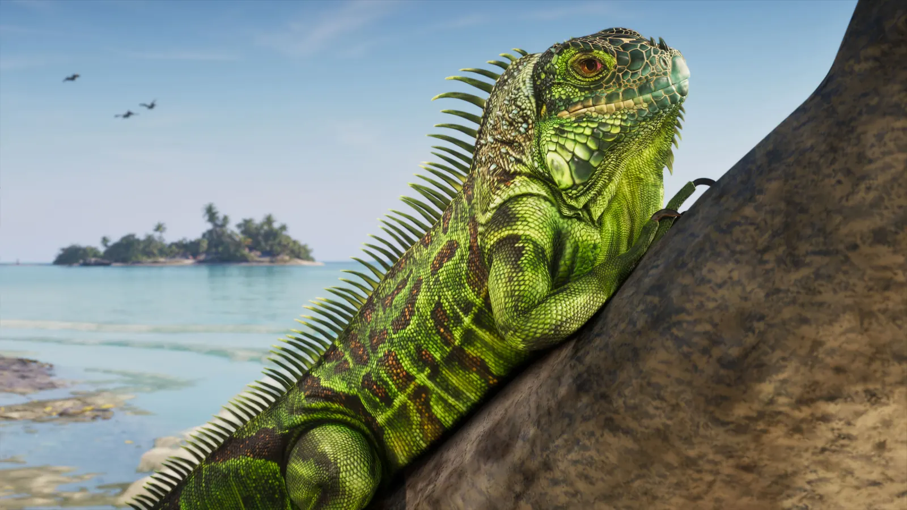
02 / 06
Ilhas ligadas por pontes, marinas e água turquesa. É onde Jason vive no começo da história.
Ver no mapa: Leonida Keys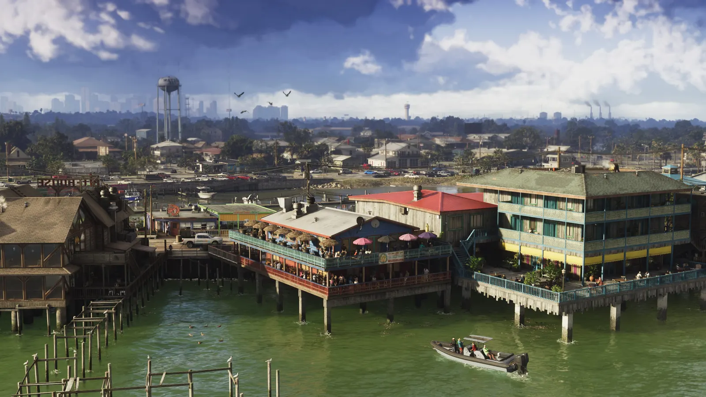
03 / 06
Pântano, palafitas e jacarés. O lado selvagem do estado, inspirado nos Everglades.
Ver no mapa: Grassrivers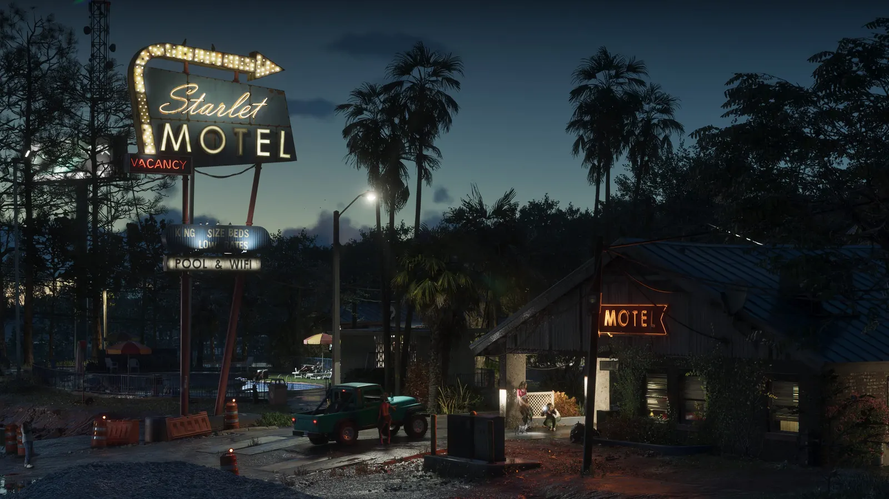
04 / 06
Cidade de praia que já viveu dias melhores: motéis de beira de estrada, píeres e letreiros piscando.
Ver no mapa: Port Gellhorn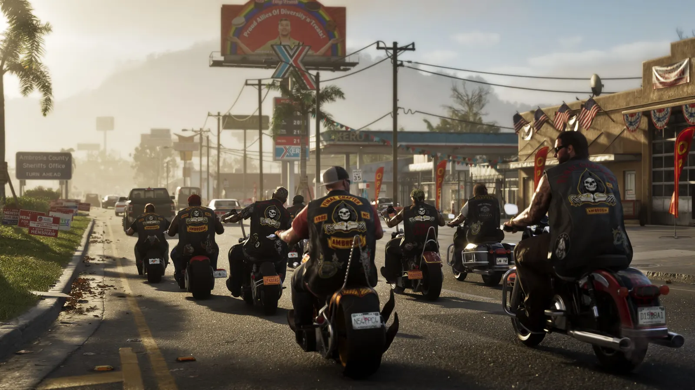
05 / 06
O interior industrial: fábricas, estradas compridas e cidades pequenas onde todo mundo se conhece.
Ver no mapa: Ambrosia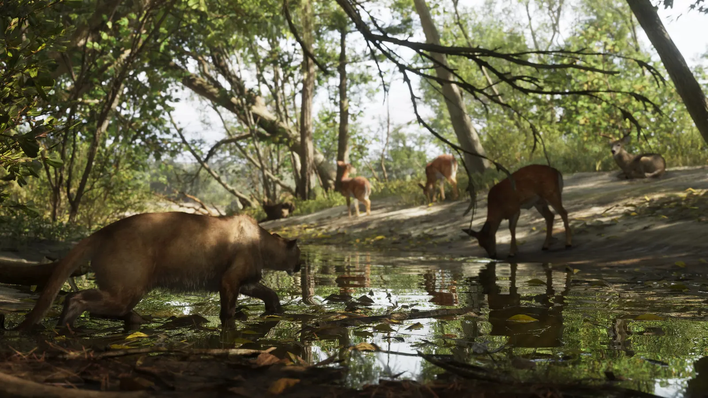
06 / 06
O parque nacional no norte do estado, com trilhas, rios e mata fechada para caça e pesca.
Ver no mapa: Mount KalagaProtagonistas
Jason cresceu entre golpistas, passou pelo Exército e foi parar nas Keys fazendo serviços para contrabandistas. Lucia aprendeu a lutar com o pai e saiu da Penitenciária de Leonida decidida a jogar de forma mais esperta.
Um serviço simples dá errado, e os dois passam a depender um do outro numa conspiração que atravessa o estado inteiro.
Todos os personagens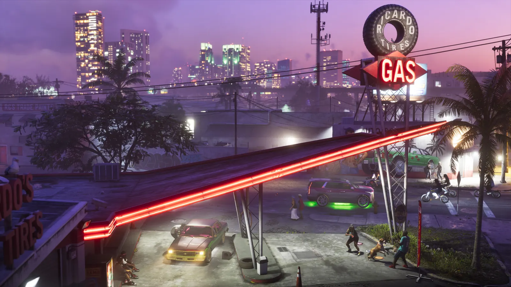
“O lado mais sombrio do lugar mais ensolarado dos Estados Unidos.”
Catálogo
Carregando destaques…
Galeria
Novidades
Do primeiro trailer ao lançamento, sempre com a fonte. Itens novos desde sua última visita ganham um selo.
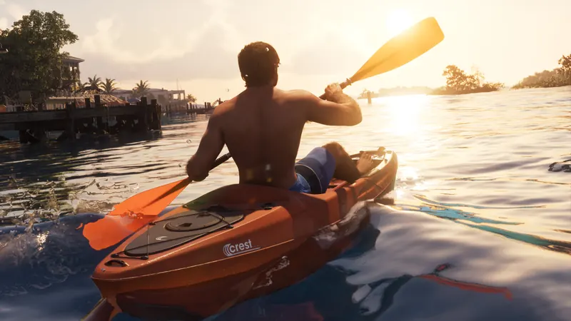
Checklist
Regiões visitadas, primeiras missões e veículos testados. O progresso fica salvo na sua conta.
Carregando as opções…